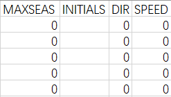

美国联合台风警报中心（JTWC）热带气旋最佳路径报文详解
个人使用JTWC热带气旋最佳路径数据集时的一些整理。在本文中，我们将详细解读联合台风警报中心热带气旋最佳路径报文中的所有信息，让大家对美国联合台风警报中心的最佳路径数据集有更加深入的了解。
参考网站
单个最佳路径文件名拆解（举例）
Individual Best Track File Name Breakdown (examples)
bio011985.txt = Best-track-Indian-Ocean-01-Storm-1945.Text-format
bsh011985.txt = Best-track-Southern-Hemisphere-01-Storm- 1945.Text-format
bwp011985.txt = Best-track-Western-Pacific-01-Storm- 1945.Text-format
wp_storm_notes_1985.txt = Western North Pacific Storm Notes
wp_year_notes_1985.txt = Western North Pacific Yearly Notes
1985s-bwp- full.zip = Zip file of all 1985 Western North Pacific Best Tracks and storm/year notes
西北太平洋最佳路径数据格式
Western North Pacific Best Track Data Format
BASIN , CY , YYYYMMDDHH , TECHNUM , TECH , TAU , LatN/S , LonE/W , VMAX , MSLP ,
TY , RAD , WINDCODE , RAD1 , RAD2 , RAD3 , RAD4 , RADP , RRP , MRD , GUSTS , EYE ,
SUBREGION , MAXSEAS , INITIALS , DIR , SPEED , STORMNAME , DEPTH , SEAS ,
SEASCODE , SEAS1 , SEAS2 , SEAS3 , SEAS4
解读
BASIN 系统中心所处海洋区域代码
basin, e.g. WP, IO, SH, CP, EP, AL
系统中心所处海洋区域代码
-
WP - Western Pacific 西（北）太平洋
-
IO - Indian Ocean （北）印度洋
-
SH - Southern Hemisphere 南半球
-
CP - Central Pacific 中（北）太平洋
-
EP - Eastern Pacific 东（北）太平洋
-
AL - Atlantic （北）大西洋
CY 当年热带气旋编号
annual cyclone number: 1 through 99
当年热带气旋编号（1-99）
YYYYMMDDHH 热带气旋实况对应时间
Warning Date-Time-Group: 0000010100 through 9999123123. (note, 4 digit year)
该报文中热带气旋实况对应时间 年/月/日/时
TECHNUM 报文类别编号
objective technique sorting number: 00 - 99
报文类别编号（可留空）
TECH 报文类别
acronym for each objective technique or CARQ or WRNG, BEST for best track.
报文类别，最佳路径数据集中均为“BEST”
TAU 预报时效
forecast period: -24 through 120 hours, 0 for best-track, negative taus used for CARQ and WRNG records.
预报时效（从实况对应时间，即YYYYMMDDHH中的时间开始计算，单位为小时）
LatN/S 纬度
Latitude (tenths of degrees) for the DTG: 0 through 900, N/S is the hemispheric index.
纬度（精确到十分位。数据集中没有小数点，因此百位即十位，十位即个位，个位即十分位）
LonE/W 经度
Longitude (tenths of degrees) for the DTG: 0 through 1800, E/W is the hemispheric index.
经度（精确到十分位。数据集中没有小数点，因此千位即百位，百位即十位，十位即个位，个位即十分位）
VMAX 近中心最大1分钟持续风速
Maximum sustained wind speed in knots: 0 through 300.
近中心最大1分钟持续风速 （注意与中国气象局的2分钟持续、日本气象厅等气象机构的10分钟持续风速区分开来！），单位“节”。1节=0.5144米/秒=1.852千米/小时
MSLP 中心最低海平面气压
Minimum sea level pressure, 1 through 1100 MB.
中心最低海平面气压，单位“百帕”
TY 气旋性质或等级
Level of tc development:
气旋性质或等级（仅热带气旋有等级区分）
展开
- TD - Tropical Depression 热带低压（相当于我国的【热带低压】，6-7级）
- TS - Tropical Storm 热带风暴（相当于我国的【热带风暴或强热带风暴】，8-11级）
- TY - Typhoon 台风（相当于我国的【台风、强台风或超强台风】，12-17级）
- ST - Super Typhoon 超级台风（相当于我国的【超强台风中的较高级别】，17级以上）
- TC - Tropical Cyclone 热带气旋
- HU - Hurricane 飓风（相当于我国的【台风】或更高等级，12级或以上）
- SD - Subtropical Depression 副热带低压（相当于我国的【热带低压】，6-7级）
- SS - Subtropical Storm 副热带风暴（相当于我国的【热带风暴】或更高等级，8级或以上）
- EX - Extratropical Cyclone 温带气旋
- MD - Monsoon Depression 季风低压
- IN - Inland 中心位于内陆
- DS - Dissipating 消散中
- LO - Low 低压区
- WV - Tropical Wave 热带波
- ET - Extrapolated 外推
- XX - Unknown 未知
RAD
Wind intensity (kts) for the radii defined in this record: 35, 50, 65 or 100.
该栏后面RAD1-RAD4中填写的风圈半径对应的1分钟持续风速，单位“节”
WINDCODE 风圈半径对应的象限
Radius code:
该栏后面RAD1中填写的风圈半径对应的象限（RAD1-RAD4按顺时针填写风圈半径！ 例如若WINDCODE一栏中填写东北象限，则RAD1-RAD4分别为东北、东南、西南、西北象限）
展开
- AAA - full circle 整圈
- NNS - north semicircle 北半圈
- NES - northeast semicircle 东北半圈
- EES - east semicircle 东半圈
- SES - southeast semicircle 东南半圈
- SSS - south semicircle 南半圈
- SWS - southwest semicircle 西南半圈
- WWS - west semicircle 西半圈
- NWS - northwest semicirlce 西北半圈
- QQQ - quadrant (NNQ, NEQ, EEQ, SEQ, SSQ, SWQ, WWQ, NWQ)
- NNQ - 正北象限
- NEQ-东北象限（最常用）
- EEQ - 正东象限
- SEQ - 东南象限
- SSQ - 正南象限
- SWQ - 西南象限
- WWQ - 正西象限
- NWQ - 西北象限
RAD1-4
按顺序填写RAD一栏中风速对应的风圈半径，单位“海里”
展开
RAD1 - If full circle, radius of specified wind intensity, If semicircle or quadrant, radius
of specified wind intensity of circle portion specified in radius code. 0 - 1200 nm.
RAD2 - If full circle this field not used, If semicicle, radius (nm) of specified wind intensity
for semicircle not specified in radius code, If quadrant, radius (nm) of specified wind intensity
for 2nd quadrant (counting clockwise from quadrant specified in radius code). 0 through 1200 nm.
RAD3 - If full circle or semicircle this field not used, If quadrant, radius (nm) of specified wind
intensity for 3rd quadrant (counting clockwise from quadrant specified in radius code). 0 through 1200 nm.
RAD4 - If full circle or semicircle this field not used, If quadrant, radius (nm) of specified wind
intensity for 4th quadrant (counting clockwise from quadrant specified in radius code). 0 through 1200 nm.
RADP 系统外围的气压
pressure in millibars of the last closed isobar, 900 - 1050 mb.
系统最外侧闭合等压圈气压值（即系统外围的气压），单位“百帕”

RRP 系统最外侧闭合等压圈半径
radius of the last closed isobar in nm, 0 - 9999 nm.
系统最外侧闭合等压圈半径，单位“海里”
MRD(RMW?) 系统最大风半径
radius of max winds, 0 - 999 nm.
系统最大风半径，单位“海里”
GUSTS 近中心最大瞬间风速
gusts, 0 through 995 kts.
近中心最大瞬间风速（即阵风，注意与VMAX一栏中的1分钟持续风速区分开来）
EYE 风眼直径
eye diameter, 0 through 999 nm.
风眼直径，单位“海里”
SUBREGION 系统中心所处子区域代码
subregion code: W, A, B, S, P, C, E, L.
系统中心所处子区域代码
展开
- A - Arabian Sea 阿拉伯海
- B - Bay of Bengal 孟加拉湾
- C - Central Pacific 中（北）太平洋
- E - Eastern Pacific 东（北）太平洋
- L - Atlantic （北）大西洋
- P - South Pacific (135E - 120W) 南太平洋
- S - South IO (20E - 135E) 南印度洋
- W - Western Pacific 西（北）太平洋

MAXSEAS 最大海浪高度
max seas: 0 through 999 ft.
最大海浪高度，单位“英尺”
INITIALS
Forecaster’s initials, used for tau 0 WRNG, up to 3 chars.
（？）一般留空
DIR 系统中心移动方向
storm direction, 0 - 359 degrees.
系统中心移动方向（°）
SPEED 系统中心移动速度
storm speed, 0 - 999 kts.
系统中心移动速度，单位“节”
STORMNAME 系统国际命名
系统国际命名
literal storm name, NONAME or INVEST. TCcyx used pre-1999, where:
cy = Annual cyclone number 01 through 99
x = Subregion code: W, A, B, S, P, C, E, L.
展开
- A - Arabian Sea 阿拉伯海
- B - Bay of Bengal 孟加拉湾
- C - Central Pacific 中（北）太平洋
- E - Eastern Pacific 东（北）太平洋
- L - Atlantic （北）大西洋
- P - South Pacific (135E - 120W) 南太平洋
- S - South IO (20E - 135E) 南印度洋
- W - Western Pacific 西（北）太平洋
DEPTH
system depth, D-deep, M-medium, S-shallow, X-unknown
（？）系统深度
- D - Deep 深邃
- M - Medium 中等
- S - Shallow 浅薄
- X - Unknown 未知
SEAS
Wave height for radii defined in SEAS1-SEAS4, 0-99 ft.
系统最大浪高，单位“英尺”
SEASCODE
Radius code:
该栏后面SEAS1中填写的最大浪高对应的象限（SEAS1-SEAS4按顺时针填写最大浪高！ 例如若SEASCODE一栏中填写东北象限，则SEAS1-SEAS4分别为东北、东南、西南、西北象限）
展开
- AAA - full circle 整圈
- NNS - north semicircle 北半圈
- NES - northeast semicircle 东北半圈
- EES - east semicircle 东半圈
- SES - southeast semicircle 东南半圈
- SSS - south semicircle 南半圈
- SWS - southwest semicircle 西南半圈
- WWS - west semicircle 西半圈
- NWS - northwest semicirlce 西北半圈
- QQQ - quadrant (NNQ, NEQ, EEQ, SEQ, SSQ, SWQ, WWQ, NWQ)
- NNQ - 正北象限
- NEQ-东北象限（最常用）
- EEQ - 正东象限
- SEQ - 东南象限
- SSQ - 正南象限
- SWQ - 西南象限
- WWQ - 正西象限
- NWQ - 西北象限
SEA1-4
按顺序填写各象限内最大浪高，单位“海里”
展开
SEAS1 - first quadrant seas radius as defined by SEASCODE, 0 through 999 nm.
SEAS2 - second quadrant seas radius as defined by SEASCODE, 0 through 999 nm.
SEAS3 - third quadrant seas radius as defined by SEASCODE, 0 through 999 nm.
SEAS4 - fourth quadrant seas radius as defined by SEASCODE, 0 through 999 nm.
另
Fields currently used for best track records:
目前用于最佳记录的字段:
BASIN, CY, YYYYMMDDHH, , TECH, TAU, LatN/S, LonE/W, VMAX, MSLP, TY
TECH = BEST
TAU = 0
报文实例
WP, 10, 2019080818, , BEST, 0, 254N, 1245E, 130, 904, ST, 34, NEQ, 240, 235, 215, 195, 990, 170, 5, 0, 10, W, 0, , 0, 0, LEKIMA, D,
实例解读
WP - 西北太平洋
10 - 当年该海洋区域的第10个编号热带气旋
2019080818 - 世界协调时（比北京时间慢8小时）2019年08月08日18时
BEST - 最佳路径
0 - 非预报
254N - 中心位于北纬25.4度
1245E - 中心位于东经124.5度
130 - 近中心最大1分钟持续风速130节
904 - 中心最低海平面气压904百帕
ST - 超级台风
34 - 以下风圈半径所对应的1分钟持续风速为34节
NEQ - 从东北象限开始填写风圈半径
240 - 东北象限风圈半径240海里
235 - 东南象限风圈半径235海里
215 - 西南象限风圈半径215海里
195 - 西北象限风圈半径195海里
990 - 系统最外侧闭合等压圈气压值990百帕
170 - 系统最外侧闭合等压圈半径170海里
5 - 系统最大风半径5海里
GUSTS - 近中心最大瞬间风速170节
W - 西北太平洋
0 -
0 -
0 -
LEKIMA - 国际命名“利奇马”
D - 系统整体较为深邃